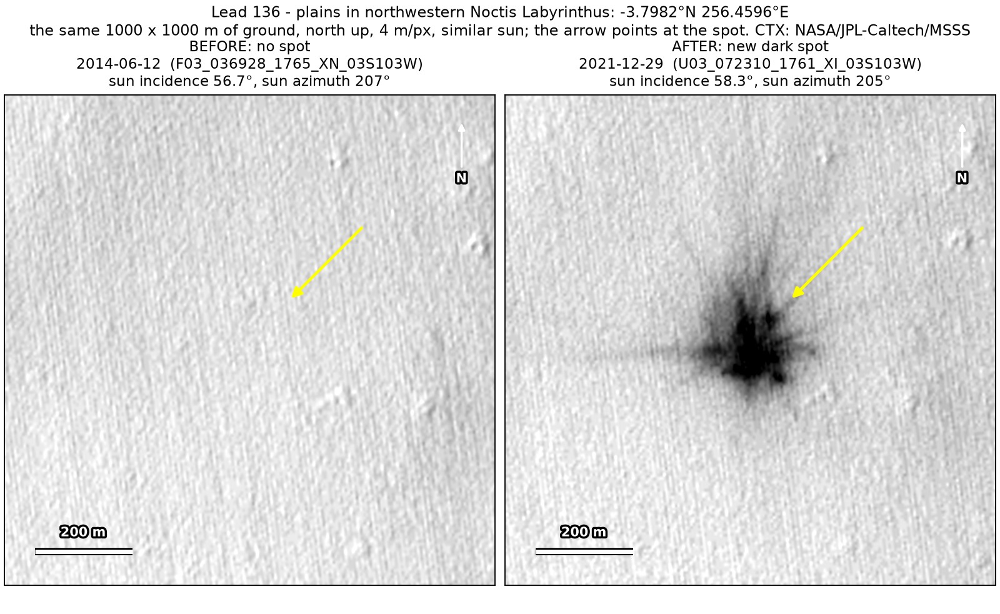
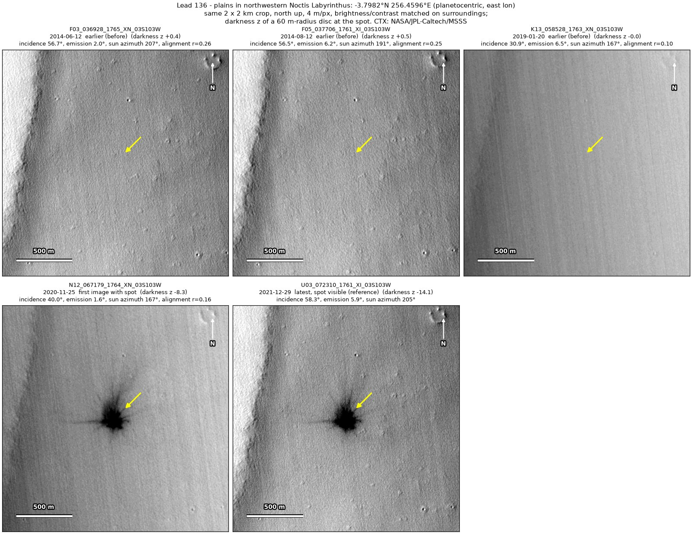
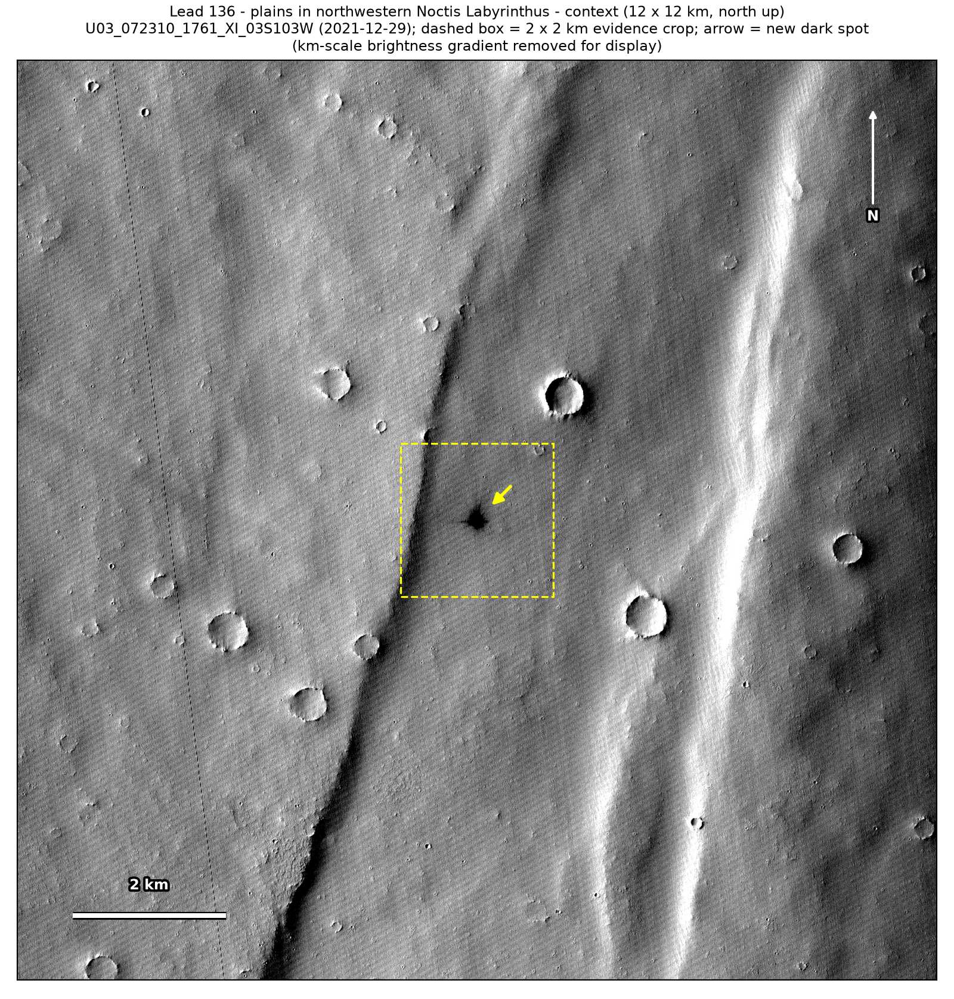

Professor of Mathematics
Paata Ivanisvili
Department of Mathematics, University of California, Irvine

← Possible new impact sites on Mars
Candidate 136: Plains in northwestern Noctis Labyrinthus
Strong · roughly 90%

What changed. A dark blast zone about 170 m across, with dark rays, the longest reaching about 500 m to the west, appeared on smooth plains in northwestern Noctis Labyrinthus between January 2019 and November 2020 and is still there in December 2021, in two CTX images from two orbits.
Why it may be a new impact. Three earlier images, from 2014 and 2019, one under almost the same sun as the December 2021 image, show plain ground there, while a small crater 240 m away shows in the 2014 images, and the aligned before-and-after difference at the spot is about four times deeper than anything else in the 2 km view. Dark rays radiating from one centre, with no tracks around them, are how the blast zone of a new impact looks.
- Location
- 3.798° S, 256.460° E (103.540° W)
- Absent
- 12 June 2014, 12 August 2014 and 20 January 2019
- Present
- 25 November 2020 and 29 December 2021
- Size
- Dark blast zone about 170 m across (176 × 182 m in the December 2021 image, 190 × 200 m in the November 2020 one), with rays reaching about 500 m
- Confidence
- Strong candidate; roughly 90% that it is a new impact.
- Caveat
- The plains are almost featureless, so the earlier images line up with the later ones only moderately well at the 2 km scale, although two craters 2 to 2.5 km away line up in all five images in 5 km views; this is why it is rated about 90% and not more. It lies outside every footprint of the high-resolution HiRISE camera; the nearest ends 15.7 km away. Like every candidate here, it is unconfirmed: see the caveat.

